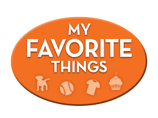

During the 21th century, the world changed rapidly. People must keep learning to avoid falling behind.That is why I like the word “dig”, which literally means to break up and move soil using a tool, a machine, or your hands. In my opinion we need to dig deep to learn what others can’t.
Everything began with easy and then changed to hard. Knowing “1+1=2” did not means that you are matering mathematica and ready to get a job. You have to learn calculus, geometry, and discrete mathematics etc. You need to persevere when others can’t and It also means that you need to bear more pressure than other people. That is why career competition exists, more advantages and specialties will make you more competitive.
In the 314 class, we already have more advantages than other people, because we have a nice professor and receive a more systematic education. Doing WOD one more time will familiarize you with the code. Just like the process of digging, learning is a cumulative process, and work every day is the key.
I am a complete beginner of JavaScript but freeCodeCamp helps me a lot. After the first week, I found that JavaScript is easy to understand and learn.
One of my favorite advantages of JavaScript is the speed. JavaScript reduces the time required by other programming languages like Java for compilation. However, one thing that worries me is safety because Since the JavaScript code is viewable to the user, others may use it for malicious purposes.
Overall JavaScript is a good programming language for software engineering.

If the main goal of life can be combined with your own interests, then this will not only add a lot of happiness to your life, but also stimulate your potential and promote your skill. If people can find themselves interests, then it already has the beginning of the road to success .
As for me, the best way to learn something is to combine it with your favorite things. Making games in JavaScript would be the best way for me to practice.